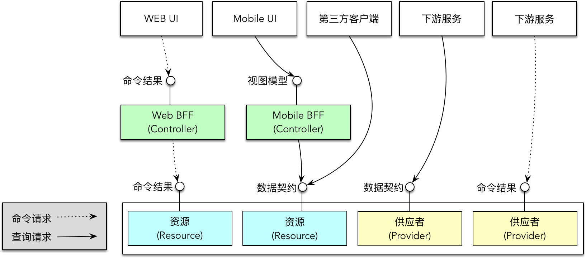
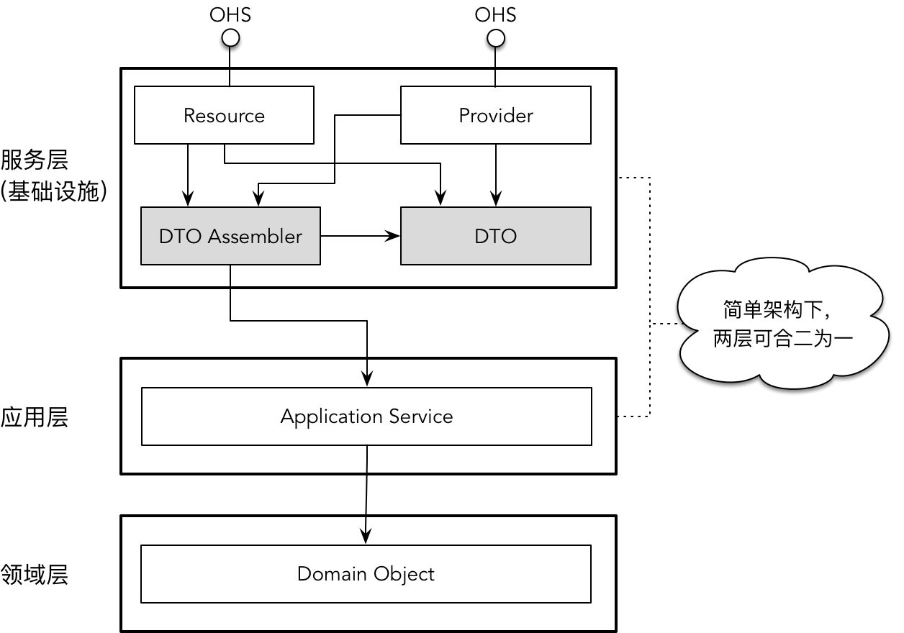

- 001 「战略篇」访谈 DDD 和微服务是什么关系？.md.html
- 002 「战略篇」开篇词：领域驱动设计，重焕青春的设计经典.md.html
- 003 领域驱动设计概览.md.html
- 004 深入分析软件的复杂度.md.html
- 005 控制软件复杂度的原则.md.html
- 006 领域驱动设计对软件复杂度的应对（上）.md.html
- 007 领域驱动设计对软件复杂度的应对（下）.md.html
- 008 软件开发团队的沟通与协作.md.html
- 009 运用领域场景分析提炼领域知识（上）.md.html
- 010 运用领域场景分析提炼领域知识（下）.md.html
- 011 建立统一语言.md.html
- 012 理解限界上下文.md.html
- 013 限界上下文的控制力（上）.md.html
- 014 限界上下文的控制力（下）.md.html
- 015 识别限界上下文（上）.md.html
- 016 识别限界上下文（下）.md.html
- 017 理解上下文映射.md.html
- 018 上下文映射的团队协作模式.md.html
- 019 上下文映射的通信集成模式.md.html
- 020 辨别限界上下文的协作关系（上）.md.html
- 021 辨别限界上下文的协作关系（下）.md.html
- 022 认识分层架构.md.html
- 023 分层架构的演化.md.html
- 024 领域驱动架构的演进.md.html
- 025 案例 层次的职责与协作关系（图文篇）.md.html
- 026 限界上下文与架构.md.html
- 027 限界上下文对架构的影响.md.html
- 028 领域驱动设计的代码模型.md.html
- 029 代码模型的架构决策.md.html
- 030 实践 先启阶段的需求分析.md.html
- 031 实践 先启阶段的领域场景分析（上）.md.html
- 032 实践 先启阶段的领域场景分析（下）.md.html
- 033 实践 识别限界上下文.md.html
- 034 实践 确定限界上下文的协作关系.md.html
- 035 实践 EAS 的整体架构.md.html
- 036 「战术篇」访谈：DDD 能帮开发团队提高设计水平吗？.md.html
- 037 「战术篇」开篇词：领域驱动设计的不确定性.md.html
- 038 什么是模型.md.html
- 039 数据分析模型.md.html
- 040 数据设计模型.md.html
- 041 数据模型与对象模型.md.html
- 042 数据实现模型.md.html
- 043 案例 培训管理系统.md.html
- 044 服务资源模型.md.html
- 045 服务行为模型.md.html
- 046 服务设计模型.md.html
- 047 领域模型驱动设计.md.html
- 048 领域实现模型.md.html
- 049 理解领域模型.md.html
- 050 领域模型与结构范式.md.html
- 051 领域模型与对象范式（上）.md.html
- 052 领域模型与对象范式（中）.md.html
- 053 领域模型与对象范式（下）.md.html
- 054 领域模型与函数范式.md.html
- 055 领域驱动分层架构与对象模型.md.html
- 056 统一语言与领域分析模型.md.html
- 057 精炼领域分析模型.md.html
- 058 彩色 UML 与彩色建模.md.html
- 059 四色建模法.md.html
- 060 案例 订单核心流程的四色建模.md.html
- 061 事件风暴与业务全景探索.md.html
- 062 事件风暴与领域分析建模.md.html
- 063 案例 订单核心流程的事件风暴.md.html
- 064 表达领域设计模型.md.html
- 065 实体.md.html
- 066 值对象.md.html
- 067 对象图与聚合.md.html
- 068 聚合设计原则.md.html
- 069 聚合之间的关系.md.html
- 070 聚合的设计过程.md.html
- 071 案例 培训领域模型的聚合设计.md.html
- 072 领域模型对象的生命周期-工厂.md.html
- 073 领域模型对象的生命周期-资源库.md.html
- 074 领域服务.md.html
- 075 案例 领域设计模型的价值.md.html
- 076 应用服务.md.html
- 077 场景的设计驱动力.md.html
- 078 案例 薪资管理系统的场景驱动设计.md.html
- 079 场景驱动设计与 DCI 模式.md.html
- 080 领域事件.md.html
- 081 发布者—订阅者模式.md.html
- 082 事件溯源模式.md.html
- 083 测试优先的领域实现建模.md.html
- 084 深入理解简单设计.md.html
- 085 案例 薪资管理系统的测试驱动开发（上）.md.html
- 086 案例 薪资管理系统的测试驱动开发（下）.md.html
- 087 对象关系映射（上）.md.html
- 088 对象关系映射（下）.md.html
- 089 领域模型与数据模型.md.html
- 090 领域驱动设计对持久化的影响.md.html
- 091 领域驱动设计体系.md.html
- 092 子领域与限界上下文.md.html
- 093 限界上下文的边界与协作.md.html
- 094 限界上下文之间的分布式通信.md.html
- 095 命令查询职责分离.md.html
- 096 分布式柔性事务.md.html
- 097 设计概念的统一语言.md.html
- 098 模型对象.md.html
- 099 领域驱动设计参考过程模型.md.html
- 100 领域驱动设计的精髓.md.html
- 101 实践 员工上下文的领域建模.md.html
- 102 实践 考勤上下文的领域建模.md.html
- 103 实践 项目上下文的领域建模.md.html
- 104 实践 培训上下文的业务需求.md.html
- 105 实践 培训上下文的领域分析建模.md.html
- 106 实践 培训上下文的领域设计建模.md.html
- 107 实践 培训上下文的领域实现建模.md.html
- 108 实践 EAS 系统的代码模型.md.html
- 109 后记：如何学习领域驱动设计.md.html
055 领域驱动分层架构与对象模型
我在《领域驱动设计实践（战略篇）》中深入探讨了领域驱动设计中分层架构的演化，最终得到了如下图所示的领域驱动分层架构：
如果采用对象范式，那么，分层架构每一层的对象模型应该如何设计呢？由于分层架构属于解决方案域中的设计方案，故而逻辑分层中的对象模型对应于设计模型。其中，位于应用层和领域层中对象模型表达了领域知识，属于领域设计模型中的一部分。对于基础设施层，它们的对象模型又该怎样与领域设计模型中的对象协作呢？
显然，由于基础设施层的南向网关与北向网关扮演的角色并不相同，它们所服务的调用者存在明显的差别。南向网关中的资源库实现会与数据库交互，主要的调用者为领域服务或应用服务，故而需要提供持久化操作的数据对象。北向网关则服务于前端或外部调用者，属于服务模型驱动设计中定义的远程服务对象。在领域模型驱动设计的背景下，这些扮演不同角色的对象模型该怎么定义呢？
数据对象模型
在推导领域驱动分层架构时，经典三层架构中位于数据访问层的贫血模型对象就是数据访问对象（Data Access Object，DAO）要操作的数据对象，它们与数据表具有一一对应的关系。在前面讲解的数据模型驱动设计中，我将其称之为“贫血的持久化对象”。在领域驱动设计的语境下，如果你采用了对象范式，则普遍认为这样的贫血模型是不恰当的。
假设我们已经拥有了设计优雅而漂亮的领域对象模型。在这个领域对象模型中，实体与值对象拥有需要持久化的数据。不仅如此，它们还拥有分配合理的行为职责；粒度也恰如其分，没有被定义为违背单一职责原则的上帝类。通过继承和组合，它们组成了一张职责平衡、协作合理的具有层级的对象图（Object Graph）。显然，层级的对象图结构与扁平的关系数据表并非完全对应的关系。
这些定义了领域行为的领域对象还能用作持久化吗？
当然可以！为什么拥有行为的对象就不能用作持久化呢？当一个领域对象既拥有数据又拥有操作数据的行为时，就会天然将业务逻辑和持久化隔离到不同的层次。以修改员工地址为例，领域服务、聚合、资源库以及资源库实现之间的协作关系如下图所示：
左侧是领域服务、聚合之间的协作，表达的业务逻辑是验证地址与修改地址，它会在验证通过后修改内存中 Employee 实体对象的属性。这是一个完全纯业务的操作。倘若计算机具有超强稳定的处理能力，执行了 Employee 的 relocateTo() 方法后，业务就执行完毕了。但是，由于内存存储可能丢失数据，对象在内存中的驻留也会占用不必要的空间，因此需要利用数据库对修改地址后的 Employee 对象进行持久化，即上图右侧所示。为了隔离业务与技术实现，领域驱动设计引入了资源库抽象，如上图中间部分的 EmployeeRepository 接口。它通过抽象隔离了领域对象模型与基础设施之间的交互，因此在进行领域分析建模与设计建模时，并不需要考虑右侧的资源库实现。至于如何实现资源库，就是持久化框架该做的事情了，例如针对关系型数据库而言，就有诸如 Spring Data JPA、MyBatis、Hibernate、jOOQ 等 ORM 框架。
要实现领域对象模型与关系型数据库的数据表之间的映射，确实比较棘手。通常，我们需要在设计与实现阶段尽量保持二者的一致性。所谓“保持一致”，并不是说为二者建立一对一的映射关系，因为领域建模需要满足面向对象的设计原则，粒度必然存在差异，但组合或继承的多个对象的边界（通常是领域设计模型中的实体对象）与数据表的边界是重合的。至于如何处理对象间的组合与继承关系，正是 ORM 需要考虑的环节。我会在第四部分《领域实现模型》中专门讲解领域对象持久化的问题。
例如在一个银行的客户管理系统中，定义了如下数据表：
- Profile：客户表，存储了客户的基本信息
- Address：一对一关联 Profile，存储客户的地址信息
- Contact：存储如电子邮件、电话等联系信息
- Individual：个人客户，为客户的一种
- Organization：组织级客户，为客户的另一种
- Host_Product_System：银行系统的产品列表
- Profile_HPS_Customer：是 Profile 和 Host_Product_System 的关联表
它们之间的关系如下图所示：
在领域对象模型中，Profile 实体聚合了 Address 与 Contact 值对象，同时，它又是 Individual 实体与 Organization 实体的父类。虽然 Individual 实体与 Organization 实体有着共同的父类，但它们却属于两个不同的聚合，并作为聚合的根实体。IndividualRepository 与 OrganizationRepository 分别负责这两个聚合的持久化。HostProductSystem 是另外一个聚合，在聚合的边界内，只有 HostProductSystem 一个实体。
Profile 与 HostProductSystem 之间存在多对多关系：一个客户可以购买多个银行产品，一个银行产品可以被多个客户购买。在数据库层面，通过引入 Profile_HPS_Customer 关联表维护了这种多对多关系。由于 Profile_HPS_Customer 关联表并没有体现领域概念，属于关系数据库的技术因素，因此在领域对象模型中，并不需要为其定义对应的领域对象。倘若采用领域驱动设计，在没有考虑数据库的情况下建立领域模型，自然不该定义该对象。不用担心持久化的问题，JPA 规范定义了 @ManyToMany 支持多对多的映射。如果考虑到聚合的设计原则，还可以利用聚合的查询方法来代替对象引用的形式。我会在《领域模型与持久化》一节中详细讲解持久化的实现机制。
因此，针对相同的业务场景，我们定义的领域对象模型如下图所示：
显然，针对相同的领域逻辑，数据模型与领域模型并不相同，但从边界来看，二者又是重合的。例如 Individual、Organization 与 Profile 的继承关系，在数据库中，采用了“类继承表”的方式来实现，即为父类和子类都建立了一个对应的表，然后在子表中设置该子表为父表关联的外键。因此，当我们建立了领域对象模型后，就没有必要再为其建立一套对应的持久化对象。领域对象是拥有领域行为的领域模型，属于领域层，但同时又可以作为持久化对象满足持久化的需求。二者的边界是逻辑上的隔离，资源库抽象在其中扮演关键角色。
服务对象模型
在分层架构中，扮演北向网关的远程服务会因为消费者和通信机制的不同，形成不同的架构风格。前面在分层架构中提到的“控制器”仅仅是其中一种表现形式，它履行了 MVC 模式中控制视图与模型之间协作的职责。控制器可以基于 REST 服务框架实现，因为运用了面向资源的软件架构设计原则，也可以称之为资源（Resource）对象。为了避免概念上的混淆，我倾向于将面向 UI 客户端的 REST 服务定义为 Controller，而将面向非 UI 客户端的 REST 服务定义为 Resource。
当面向 UI 客户端时，为了减少前端开发的业务逻辑，避免不必要的重复代码，远程服务最好能为前端 UI 直接提供绑定视图（View）的模型对象。然而，现实并不总是那么如意，由于前端与后端的观察视角有着本质的差异，后端开发人员在设计为 UI 提供的后端服务时，总是不够体贴。如果定义的远程服务既要应对各种前端 UI 的请求，又要面对其他客户端包括下游服务的请求，则服务接口的设计就很难做到面面俱到。当前社区对此的应对方案是在后端远程服务与前端 UI 之间再引入一个间接的服务。该服务的接口设计专为前端服务，但本质上又属于后端服务，因而被称之为 BFF（Backend For Frontend）服务。
当面向非 UI 客户端时，未必一定采用 REST 架构风格提供远程服务，即远程服务未必是资源。若采用 RPC+ProtocolBuffer 的通信协议与消息协议，我们会将服务定义为供应者（Provider），它的调用者则为消费者（Consumer）。这是远程服务的 Provider/Consumer 模式，例如 Dubbo 框架设计的远程服务就遵循这一模式。
无论是控制器、资源还是供应者，都需要定义消息协议。消息分为请求消息（Request Message）和响应消息（Response Message）。请求消息包括命令消息（Command Message）和查询消息（Query Message）。若采用事件驱动架构，还包括事件消息。由于事件的端口并非远程服务，因此服务对象模型并没有包含事件消息。
响应消息与请求消息的类型有关，也与客户端与远程服务的协作模式有关。常见的协作模式包括请求/响应（Request/Response）模式和即发即忘（Fire-and-Forget）模式。查询消息一定采用请求/响应模式，视客户端的不同，响应消息可以分为面向 UI 客户端的视图模型和面向非 UI 客户端的数据契约。命令消息可以采用请求/响应模式，返回的响应消息为命令结果；采用即发即忘模式时，没有响应消息返回。下图是服务对象模型的组成：
理清服务对象模型非常有必要，因为这牵涉到各种对象之间的协作。不同的远程服务，在分层架构的位置和它承担的职责也不相同。假设我们需要为 UI 客户端引入专门的 BFF 服务，那么整个服务对象模型与客户端的调用关系体现为：

远程服务的定义受到架构模式、通信协议的影响，同时也与服务的消费者有直接关系。关于服务之间的集成与通信，我会在本课程第五部分《融合：战略设计与战术设计》深入讲解，在本节，我主要就服务对象模型中较容易混淆的视图模型对象与数据契约对象作深入阐述。
视图模型对象
在服务对象模型中，远程服务若定义为控制器服务对象，面向的客户端就是前端 UI。目前流行的前端框架都遵循 MVC 模式或其变种 MVP 与 MVVM 模式，并采用单页面应用（Single Page Application）的前端开发范式。前端呈现的内容由后端服务提供，即视图模型对象。对于一个典型的前后端分离架构，倘若采用单页面应用，则前后端各对象之间的交互方式大抵如下图所示：
如果后端的控制器服务返回的就是前端需要的视图模型，就能恰好满足前端视图的呈现需求，使得前端开发变得简单。若后端服务在满足 UI 客户端的同时，还需要同时满足下游服务的消费请求，定义的消息对象就很难做到鱼与熊掌兼得。例如，后端提供了 AnalysisResultResource 服务，它接受客户端发送的数据分析请求，包括执行分析需要的维度、指标以及过滤条件。接到请求后，后端服务会根据请求生成 Spark 支持的 SQL 语句，并交由 Spark 的工作器执行数据分析，并将分析后的结果返回。分析结果如下所示：
{
"viewId": "d6da80bf-4100-45c5-86c7-6ca57e0f7603",
"rows": [
["IPhone", 1820],
["Huawei", 1932],
["Oppo", 901],
["Vivo", 934],
["Samsung", 129],
["Others", 1330]
]
}
分析结果为报表的指标统计数据，属于服务与客户端之间确定的服务契约的一部分，但它表达的其实是服务的数据契约，而非视图模型。当调用者为前端 UI，并通过 EChart 对分析结果进行可视化时，如上的分析结果就不符合视图呈现的要求，需要前端对响应消息做进一步转换。这会加重前端开发的负担。若前端需要支持的客户端不止限于 Web 客户端，还包括不同系统的移动客户端，就需要在多个前端应用中重复实现该转换逻辑，导致重复开发。如果该服务返回的结果直接面向前端，例如支持 EChart 的可视化呈现，就可以定义为视图模型对象：
option = {
xAxis: {
type: 'category',
data: ['IPhone', 'Huawei', 'Oppo', 'Vivo', 'Samsung', 'Others']
},
yAxis: {
type: 'value'
},
series: [{
data: [1820, 1932, 901, 934, 129, 1330],
type: 'line'
}]
};
后端服务直接返回视图模型对象会导致前端 UI 呈现与后端服务的耦合。例如，当我们放弃使用 EChart 改为 D3 来显示可视化图表时，就会因为前端呈现的变化引起后端服务的修改，这违背了服务的自治性。倘若在后端服务之上引入 BFF 服务，就可以隔离前端与服务的耦合，又可以实现由分析服务返回的数据契约对象向 EChart 视图模型的转换，使得前端 UI 可以直接绑定和呈现视图模型对象。
如果前端 UI 既要支持移动端，又要支持 Web 端，且 UI 交互与呈现存在较大差异，还可以为不同的前端提供不同的 BFF 服务，返回的视图模型对象也不相同，甚至针对相同业务的相同移动端，由于使用者的角色不同，用户体验和关注内容有所不同，BFF 返回的视图模型定义也会有所不同。
BFF 服务的契约可以由前后端开发人员共同商定，但由于前端开发人员更了解前端 UI 与用户体验，因此最佳选择是由前端人员来开发和实现 BFF 服务。考虑到前端多为 JavaScript 开发人员，因而常常会选择 KOA 或 Express 这样的基于 Node.js 实现的 REST 框架来定义 REST 服务。近来，同样基于 JS 的 GraphQL 逐渐成为了实现 BFF 服务的新宠。相较于 REST 服务，GraphQL 提供了不同的思路。例如，它为了解决 API 接口爆炸的问题，通过暴露单个服务 API 接口，可以将多个 HTTP 请求聚合成一个请求，然后在单个请求中执行多个查询。GraphQL 实现的 BFF 服务就像一个统一的网关，由它提供全量字段，前端可按需获取，还可以通过增加新类型和基于这些类型的新字段添加新功能，不会造成兼容性问题。
数据契约对象
当位于下游的消费者调用服务的目的不是为了视图呈现时，交互的消息对象为“数据契约对象”，它将持有业务行为需要的数据。为了避免重复定义，我们可否像对待持久化对象那样，直接将领域层的领域对象作为数据契约对象呢？
这需要从两个层次递进地思考：
- 领域层定义的领域对象是否满足客户端的调用需求？
- 若满足需求，直接将领域对象暴露给外部调用者，是否合理？
这两个问题均牵涉到一个模式——数据传输对象（DTO）模式。DTO 模式最早运用于 J2EE，Martin Fowler 将其定义为：用于在进程间传递数据的对象，目的是为了减少方法调用的数量。因此，DTO 模式诞生的背景在于分布式通信。考虑到网络传输的损耗与不可靠性，设计分布式服务需遵循一个总体原则：尽可能设计粗粒度的服务，每个服务的方法应代表一个完整的功能，而不是功能的一个步骤。粗粒度服务可以减少服务调用的次数，从而减少不必要的网络通信，同时也能避免对分布式事务的支持。
粗粒度的服务自然需要返回粗粒度的数据对象。领域对象遵循面向对象设计原则，通过细粒度来分离职责，因而无法满足粗粒度服务契约的要求。这就需要对领域对象进行封装，组合更多的细粒度对象形成一个粗粒度的数据传输对象。这就是数据传输对象（DTO）存在的意义。
当然，领域对象在某些业务场景也能够满足服务契约的要求。但基于以下原因，我并不建议直接将领域对象暴露给外部消费者：
- 通信机制：领域对象通常是在进程内传递，不需要支持序列化与反序列化。为了支持分布式通信而引入序列化，会在一定程度上对领域对象造成污染，更何况部分敏感数据在序列化时还需要过滤，例如用户的密码信息。
- 安全因素：领域驱动设计提倡避免贫血模型，且多数领域实体对象并非不可变的值对象。若作为数据传输对象暴露给外部服务，调用者可能会绕过服务方法直接调用领域对象封装的行为，或者通过 set 方法修改其数据。
- 变化隔离：若将领域对象直接暴露，就可能受到外部调用请求变化的影响。领域逻辑与外部调用的变化方向往往不一致，因而需要一层间接的对象来隔离这种变化。
引入数据传输对象自然是有代价的。我们需要定义一个与领域对象相似度极高的对象，同时还需要编写代码完成数据传输对象的组装，即 Martin Fowler 为 DTO 模式引入的装配器（Assembler）对象。注意，数据传输对象并不具备业务行为，通常应定义为不可变对象。
若需要装配数据传输对象，装配的职责应该放在分层架构的哪一层呢？我在战略设计中讨论过分层架构中各层的职责与其协作关系。在分布式系统中，提供远程调用的分布式服务与领域驱动设计中的应用服务虽然皆为领域逻辑的外观，但二者应视作不同的概念。分布式服务由于需要调用分布式框架，如 REST 框架或 RPC 框架等，属于基础设施层的范畴，应构建在应用层之上。如果站在整洁架构的角度看，这些远程服务都属于应用层的外部。为了更好地体现服务的意义，可以将其笼统称之为“服务层”。服务层中包含 REST 服务的资源、控制器以及 RPC 服务的供应者。本质上，它们就是上下文映射中的开放主机服务（OHS）。
引入数据传输对象的主要目的是支持远程服务调用，如果客户端就在本地，例如运行在同一进程中的下游限界上下文，就可以直接调用应用层的应用服务。应用服务负责对领域逻辑的封装与协调，满足完整的用例需求。显然，服务层和应用层虽然都是提供完整功能的业务服务，但前者对外，后者对内，各有其清晰的职责。有时候，针对一些粒度小的微服务，也可以考虑将二者合二为一，让分层架构变得更简单。
如果将服务层与应用层分开，遵循整洁架构的思想，位于外部的服务层依赖于内部的应用层和领域层。由于 DTO 装配器需要访问领域对象进行装配，装配后的 DTO 被服务层的远程服务使用，而装配 DTO 的逻辑又不属于领域逻辑的一部分，故而服务层和应用层都可以作为 DTO 以及 DTO 装配器的栖身之所。下图将二者放到了服务层：

DTO 本身作为一种模式，表达的是对远程服务数据的封装，因而它既可以用于 UI 客户端，又可以用于非 UI 客户端。为了更好地区分远程服务以及它的协作模式与数据定义，在本课中，我不再使用 DTO 这个术语，而是根据服务角色与客户端的不同，分别定义为视图模型对象和数据契约对象。这两种不同的对象模型满足了外部调用者对不同远程服务的要求。